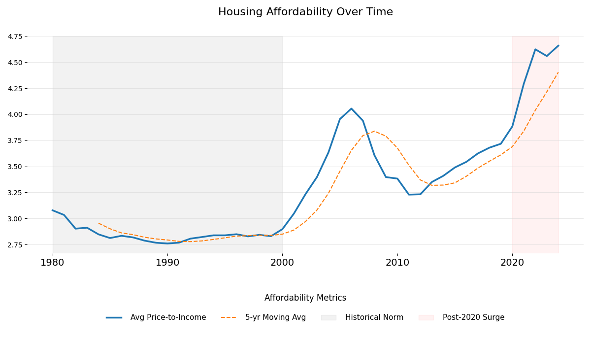
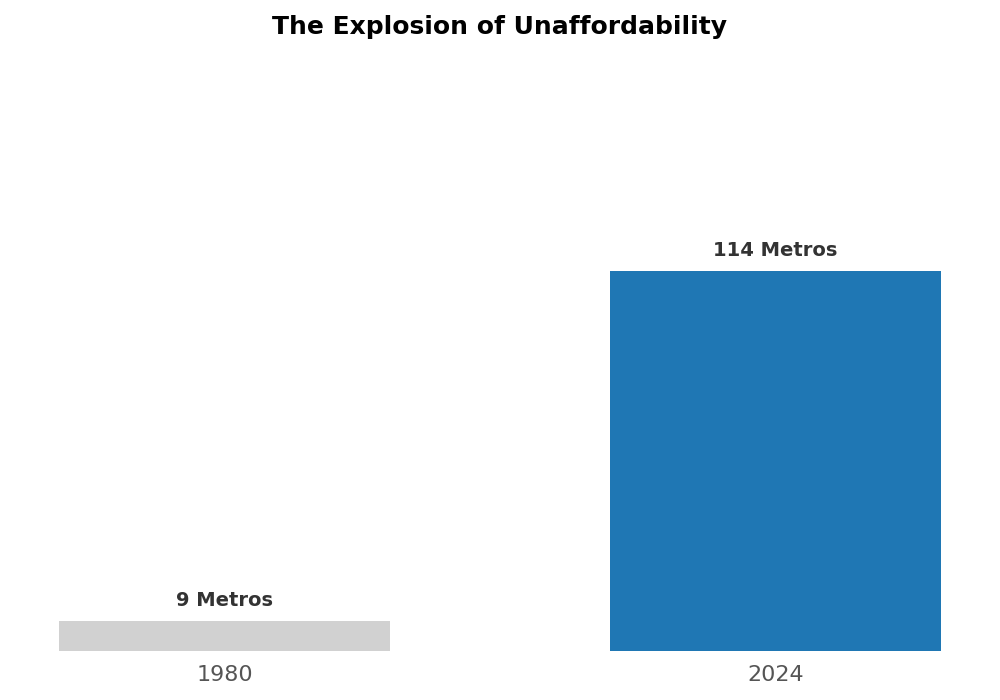

Housing Affordability Crisis
Analyzing Price-to-Income Ratios Across U.S. Metro Areas (1980-2024)
Overview
This project analyzes the dramatic shift in housing affordability across U.S. metropolitan areas from 1980 to 2024. Using price-to-income ratio data, we examine how the housing market has evolved from a period of relative stability to today's affordability crisis.
The price-to-income ratio measures how many years of median household income are needed to purchase a median-priced home. Historically, a ratio above 5.0 is considered "severely unaffordable."
Research Questions
1. The Great Decoupling
How has the national average price-to-income ratio shifted from the "historical norm" (1980-2000) compared to the post-2020 era?
2. The Affordability Ceiling
In 2024, how many metros have surpassed a ratio of 5.0 (the threshold for "severely unaffordable"), and how does this compare to 1980?
3. Geographic Volatility
Which U.S. metro areas experienced the greatest long-term volatility in housing affordability, and how is that spatially distributed?
Key Findings
Housing Affordability Over Time
The chart below shows the national average price-to-income ratio from 1980-2024. The gray area represents the "historical norm" period (1980-2000), while the red area highlights the post-2020 surge in prices.

National average price-to-income ratio with 5-year moving average
The Explosion of Unaffordability
Comparing 1980 to 2024 reveals a dramatic increase in the number of metros where housing is severely unaffordable (ratio > 5.0).

Number of metros with price-to-income ratio exceeding 5.0
Geographic Distribution of Volatility
The interactive map below shows which metro areas experienced the greatest volatility in housing affordability. Darker colors indicate higher volatility (standard deviation of year-over-year percentage changes).
Hover over any metro area to see exact volatility values.